SECCIÓN 9Q
TECHO
ESPECIFICACIONES
Especificaciones de apriete de la sujeción
| Aplicación | N•m | Lb-pie | Lb-pulg. |
| Tornillos del marco del techo corredizo | 3 | - | 27 |
HERRAMIENTAS ESPECIALES
Tabla de herramientas especiales

 
| KM-475-B Extractor de elementos de acabado |
MANTENIMIENTO Y REPARACIÓN
Servicio en el vehículo
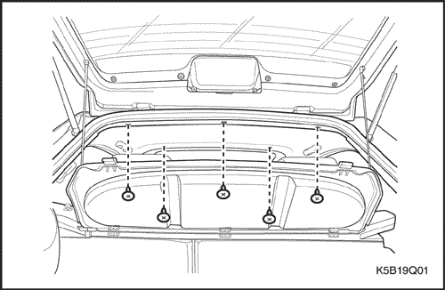
Forro de techo moldeado
Procedimiento de desmontaje
- Desconecte el cable negativo de la batería.
- Desmonte las viseras parasol. Consulte el apartado "Viseras parasol" de esta sección.
- Desmonte la luz de cortesía interior. Consulte la Sección 9B, Sistemas de alumbrado.
- Desmonte el panel de guarnecido del montante A haciendo palanca. Consulte la Sección 9G, Guarnecido interior.
- Desmonte el panel superior de guarnecido del montante B. Consulte la Sección 9G, Guarnecido interior.
- Desmonte el panel de guarnecido del montante C haciendo palanca. Consulte la Sección 9G, Guarnecido interior.
- Desmonte el asidero del lado del pasajero y el soporte del techo corredizo. Consulte los apartados "Asidero del lado del pasajero", de esta sección.
- Desmonte la moldura del techo corredizo, en caso de que la tenga. Consulte el apartado "Techo corredizo manual" de esta sección.
- Despegue el burlete de la abertura del portón trasero. Consulte la Sección 9P, Puertas.
- Desmonte el forro del techo.
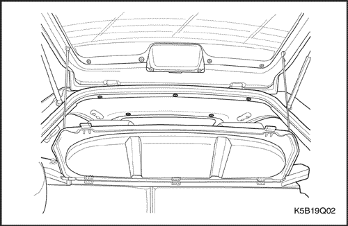
Procedimiento de montaje
- Monte el forro del techo.
- Monte el burlete de la abertura del portón trasero. Consulte la Sección 9P, Puertas.
- Monte la moldura del techo corredizo, si dispone de la misma.
- Monte el asidero del lado del pasajero y el soporte del techo corredizo. Consulte los apartados "Asidero del lado del pasajero", de esta sección.
- Monte los paneles de guarnecido de los montantes A, B y C. Consulte la Sección 9G, Guarnecido interior.
- Monte la luz de cortesía interior. Consulte la Sección 9B, Sistemas de alumbrado.
- Monte las viseras parasol. Consulte el apartado "Viseras parasol" de esta sección.
- Conecte el cable negativo de la batería.
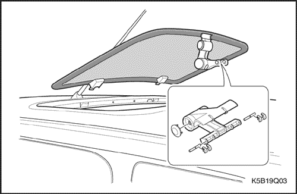
Techo corredizo manual
Procedimiento de desmontaje
- Quite los clips y los cierres.
- Desmonte la pantalla del techo corredizo.
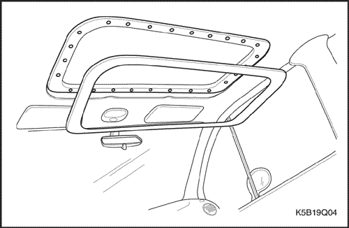
- Desmonte la moldura del techo corredizo que hay en el habitáculo.
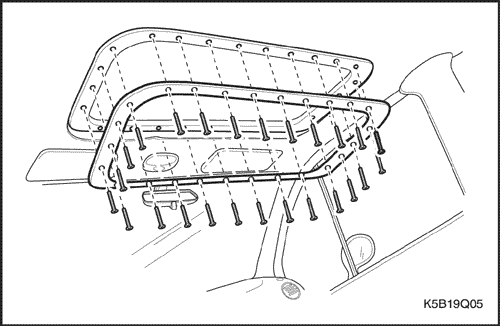
- Quite los tornillos y el marco inferior del techo corredizo.
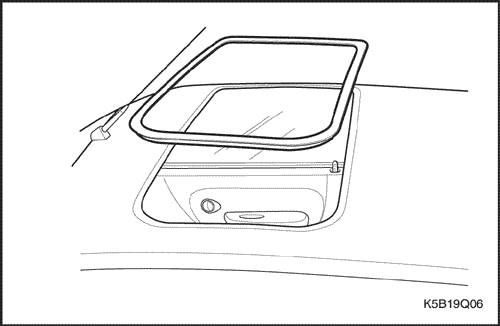
- Desmonte el marco superior del techo corredizo.
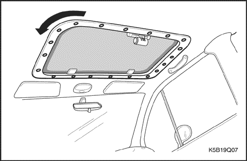
Procedimiento de montaje
- Monte el marco superior del techo corredizo.
- Monte el marco inferior del techo corredizo con sus tornillos.
- Monte la moldura interior del techo corredizo.
- Monte la pantalla con los clips y el cierre.
Apretar
Apriete los tornillos hasta 3N•m (27 lb-pulg.).
Aviso: Cuando monte el marco inferior del techo corredizo, asegúrese de apretar antes los tornillos tal y como se muestra en el dibujo y apriételos todos.
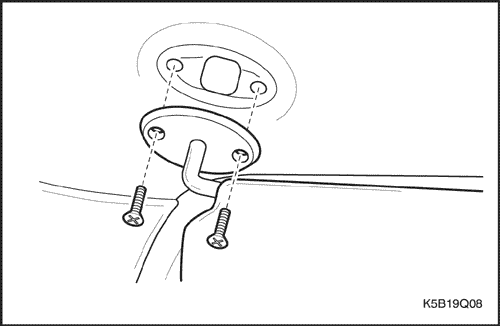
Viseras parasol
Procedimiento de desmontaje
- Quite los tornillos y desmonte la visera parasol del forro de techo.
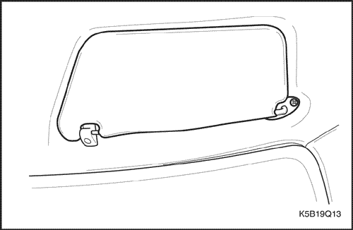
Procedimiento de montaje
- Monte las viseras parasol con sus tornillos.
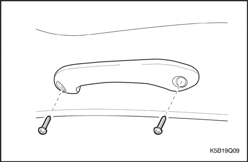
Asidero del lado del pasajero
Procedimiento de desmontaje
- Quite los tornillos y desmonte el asidero del lado del pasajero del forro de techo.
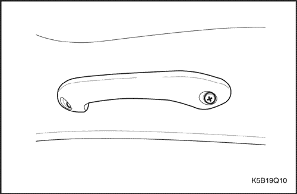
Procedimiento de montaje
- Monte el asidero del lado del pasajero en el forro del techo con sus tornillos.
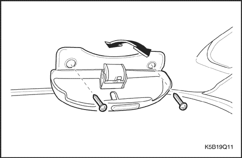
Soporte del techo corredizo
Procedimiento de desmontaje
- Quite los tornillos y el soporte del techo corredizo.
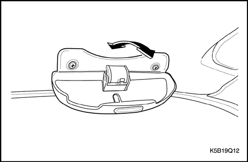
Procedimiento de montaje
- Monte el soporte del techo corredizo con los tornillos.
DESCRIPCIÓN GENERAL Y FUNCIONAMIENTO DEL SISTEMA
Techo
El techo es un elemento metálico pintado de - una sola pieza que incorpora un forro sólido y único y dos molduras, una a cada lado del techo del vehículo.
Las molduras, que encuadran y ocultan las soldaduras de carril del techo, pueden repararse por separado.
Este forro de techo moldeado de una sola - pieza, habitual en el notchback (cuatro puertas) y el hatchback (cinco puertas), consta de un sustrato moldeado y cubierto con un revestimiento de tela con refuerzo de - espuma. La construcción - de una sola pieza requiere que se repare el forro del techo como un solo conjunto.
Techo corredizo manual
El techo corredizo:
- Está diseñado para proporcionar luz y aire a través del techo mientras se conduce.
- Está incorporado al techo.
- Está hecho de vidrio.
Viseras parasol
Los visores parasol se mueven hacia abajo o lateralmente para impedir el deslumbramiento. También se mueven lateralmente cuando se desenganchan de su soporte.
Asideros de los pasajeros
El asiento del pasajero delantero dispone de un asidero. Los pasajeros pueden utilizar estos asideros como ayuda para mantener el equilibrio en carreteras accidentadas o cuando se tome una curva cerrada.
Percha
La percha va sujeta al forro del techo encima del asiento trasero del pasajero en el lado izquierdo, en caso de conducción a izquierdas, y a la derecha del asiento trasero del pasajero, en la conducción a derechas. En esta posición hay una percha en lugar del asidero del pasajero.